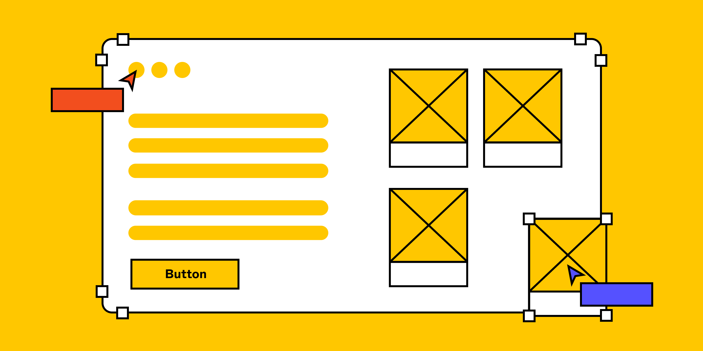

What is the purpose of a README file?
Including a clear and well-structured README is considered a best practice as it helps others quickly
understand the project, encourages adoption or contributions, and makes maintenance easier for everyone
involved.
Read more

What is the purpose of a wireframe?
The purpose of a wireframe is to visually map out the basic structure and functionality of a website, app, or
digital product before adding any detailed design elements or content. Wireframes focus on layout, user flow,
and placement of key elements like menus, buttons, and content sections, helping teams to plan and refine
usability, navigation, and information architecture at an early stage.
Read more

What is a branch in Git?
A branch in Git is an independent line of development that allows you to work on new features, bug fixes, or
experiments in isolation from the main code base (usually the main or master branch). It works like a parallel
workspace where changes can be made without affecting other branches, enabling multiple streams of work to
happen simultaneously.
Read more